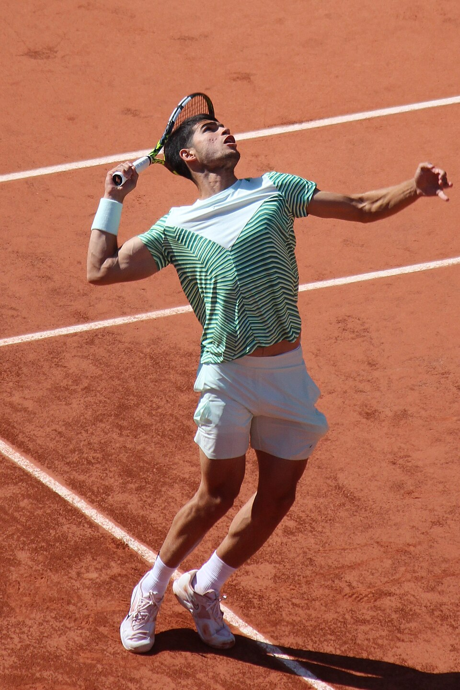

Biografía
Carlos Alcaraz Garfia nació el 5 de mayo de 2003 en El Palmar, Murcia, España. Desde muy pequeño mostró un talento extraordinario para el tenis, disciplina en la que comenzó a entrenar desde los cuatro años bajo la influencia de su familia.
Su progreso fue rápido y constante. Durante su etapa juvenil consiguió importantes resultados que lo posicionaron como una de las grandes promesas del tenis español. Más adelante comenzó a entrenar con el ex número uno del mundo Juan Carlos Ferrero, quien se convirtió en una figura clave en su desarrollo profesional.
En 2022 logró un hito histórico al convertirse en el jugador más joven en alcanzar el número 1 del ranking ATP, consolidándose como una de las máximas estrellas del tenis mundial.
